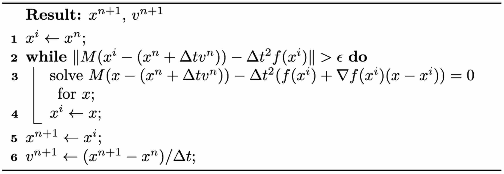

隐式时间积分
与显式时间积分相反，隐式时间积分需要求解一个方程组才能确定 \(x^{n+1}\) 和 \(v^{n+1}\) 的值。这种方法的一个显著优势是它有可能大幅提升稳定性。最简单的隐式积分形式——后向欧拉法——介绍如下。
方法 1.5.1 (后向欧拉时间积分在牛顿第二定律中的应用). 已知当前状态变量、质量矩阵以及从 \(t^n\) 到 \(t^{n+1}\) 的时间区间，更新规则如下： 其中 \(n\) 取值为 \(0,1,2,\dots\)。
在本书讨论的许多情形中，力由位置向量 \(x\) 导出。因此我们可以记 \(f^{n+1} = f(x^{n+1})\)。必须认识到，\(x^{n+1}\) 的更新依赖于已知的 \(v^{n+1}\)，而 \(v^{n+1}\) 的计算又取决于 \(x^{n+1}\)。这种相互依赖形成了循环依赖，因此必须求解一个方程组才能准确求出 \(x^{n+1}\) 与 \(v^{n+1}\)。令 \(v^{n+1} = (x^{n+1} - x^n) / \Delta t\)，方程 (1.5.1) 可改写为： 由于力 \(f\) 相对于位置 \(x\) 往往呈现非线性，方程 (1.5.2) 通常也是非线性的，需要借助牛顿法之类的非线性求根技术来求解。
方法 1.5.2 (将牛顿法应用于后向欧拉时间积分). 如下方算法所述，牛顿法是一种迭代技术，从解的初始估计 \(x^i\) 出发。在当前迭代点 \(x^i\) 处，它对 \(f(x^{n+1}) \approx f(x^i) + (x^{n+1}-x^i) \nabla f(x^i)\) 做线性近似，然后求解一个线性系统并更新迭代。这一过程反复进行，直至达到令人满意的收敛程度。
算法 1.5.1 (后向欧拉时间积分的牛顿法). 
虽然后向欧拉法即使在 \(\Delta t\) 取很大值时也能保证无条件稳定，但必须认识到，增大 \(\Delta t\) 可能导致系统条件数变差。条件数变差会使线性系统的求解更加困难。此外还需要牢记，力的线性化只是一种近似。如果解的初始估计与真实解相距较远，标准的牛顿迭代可能不收敛，甚至可能发散。
在后文的讨论中，我们将介绍一种改进的牛顿法。这一改进旨在针对特定类型的问题保证收敛，而不论初始估计如何、\(\Delta t\) 取多大。